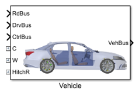
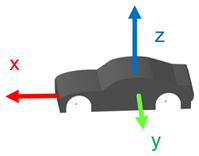
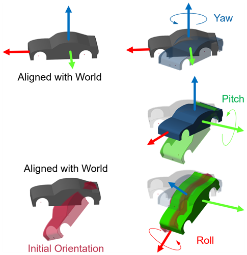

Vehicle
Contents
Block
The Vehicle block accepts three input busses and produces one output bus. The two physical connections are intended for the World frame (port W) and for connections to frames for defining dynamic cameras (port C).
Coordinate System
The default coordinate system for the car model is z-up, x-forward, and y to the left. This follows the ISO 8855 convention. Measurements can be converted to other standard conventions.

Initial Positions and Velocities
The initial position and orientation for the vehicle is defined in the structure Init.
- Init.Chassis.sChassis.Value: Initial position in world frame, expressed as [x y z] in meters.
- Init.Chassis.vChassis.Value: Initial velocity in vehicle frame, expressed as [vx vy vz] in meters/second.
- Init.Chassis.aChassis.Value: Initial orientation in vehicle frame, expressed as [roll, pitch, and yaw] in radians. The rotations are applied sequentially in the order yaw->pitch->roll, and they are applied intrinsically. Each of the elemental rotations is performed on the axis resulting from the previous rotation.

Vehicle Parameters
The Vehicle parameters is a data structure with fields corresponding to different parts of the model. The "Class" fields in the data structure are used to select the active variants within the model.
Initialization Trigger Dropdown
The mask initialization selects the active variants for many levels of the model. To trigger that code, change the value of Initialization Trigger Dropdown in the Vehicle block from 0 to 1 or from 1 to 0. The code will set the active variant at every level by triggering the same mechanism at every level with variants in the model.